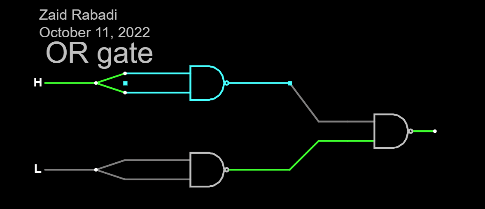
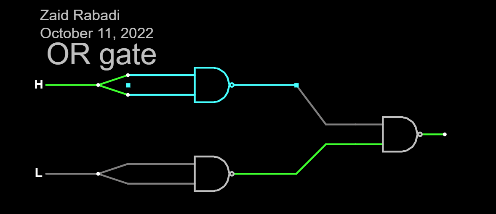

Name: Zaid Rabadi
Date: 12-Oct-22
I received assistance from: Srujan Sannidhi
I assisted:N/A
 

I learned how to make logic gates in the system
I encountered challlenges when I was trying to upload the screenshots to SFTP
It could be improved if there was a video online explaning how to make logic gates
I now realize that it is important to follow directions when doing something quickly and efficiently